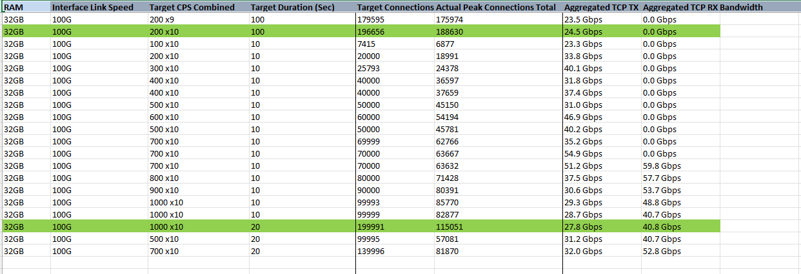
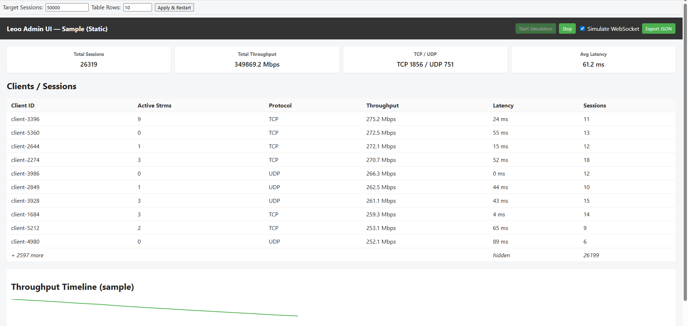

LeoO is built for live-network validation — no hardware generators needed. Scale TCP/UDP, stress NAT/firewalls, and test cloud & edge infrastructure.
Ultra-Band Ready
Supports 400G to 800G line rates. Built for next-gen data centers and high-speed backbones.
200k+ Concurrent
Simulate massive client populations — up to 200,000 active sessions with controllable CPS.
Cloud & AI DC
Optimized for AWS, Azure, GCP, and AI supercomputer clusters. In-flight testing at scale.
Lightweight Field Deployment
Run on laptops, VMs, or embedded Linux. No proprietary hardware — just CLI or script.
Latency & Throughput
End-to-end data-path load, latency validation, and long-running stability tests.
Scriptable Automation
Full CLI for CI/CD, network readiness, and automated regression suites.
Ultra-Band 400G – 800G
LeoO Enterprise natively supports ultra-high bandwidth testing for 400G/800G links. Whether you're validating ZR optics, DWDM, or AI cluster interconnects — our engine generates realistic traffic patterns at line rate. Community Edition demonstrates the core engine; enterprise adds advanced PFC, ECN, and telemetry.
Use case: AI data centers (NVIDIA/AMD clusters), hyperscale spine-leaf, and metro DWDM networks.
AI Data Center & Supercomputer
NEW LeoO provides RDMA over Converged Ethernet (RoCE) simulation and congestion control testing for AI/ML clusters.
- 400G/800G RoCEv2
- ECN / PFC stress
- Collective communication patterns (All-Reduce)
- GPU-to-GPU traffic simulation
Enterprise: full support for NVIDIA Spectrum, Cisco 8000, Juniper QFX, and Arista 7800.


Hardware generators are lab-bound; LeoO is field-deployable on any Linux system.
Built for customer-site validation, inflight testing, and cloud-native environments.